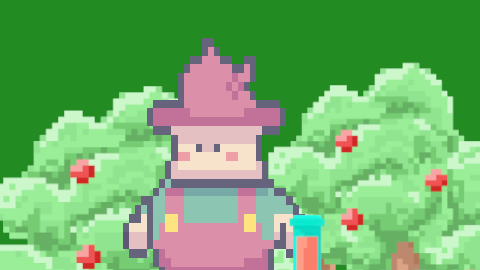

Jomaserver Blog
Olá entusiasta, Meu nome é João mas meus amigos me chamam de Jomas!!!
Esse é meu blog! Aqui compartilho de tudo um pouco, mas o foco principal é compartilhar ferramentas que eu crio ou que uso. O intuito é facilitar meu estudo e poder ajudar um pouco para quem tem os mesmos interesses que eu! Agradeço pela atenção desde já e espero que gostem do conteúdo!!!!!
Caso gostem do conteúdo utilizem a caixa de inscrição para receber as atualizações pelo e-mail (recurso disponivel apenas em computadores). ->



No matching items